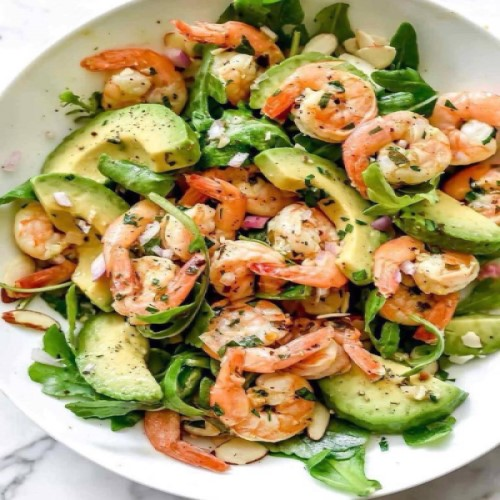
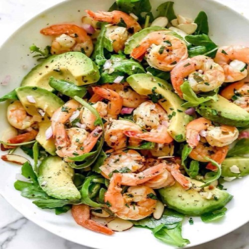

Disfruta una comida rica y saludable todos los días:
Elaboramos platos caseros y saludables:
Una alimentación sana nos brinda la oportunidad de desarrollarnos plenamente, de vivir con salud, de aprender y trabajar mejor. Sin embargo nuestro ritmo actual muchas veces no nos permite gozar de una buena alimentación. Por eso, para poder comer rico y saludable en el día a día, ofrecémos una amplia variedad de viandas saludables.
En la seccion recetas, te dejamos ideas sencillas para organizarte la semana sin complicaciones. Platos ricos y equilibrados para todos los días